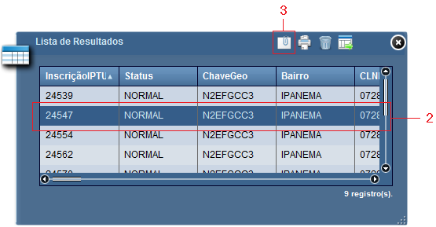
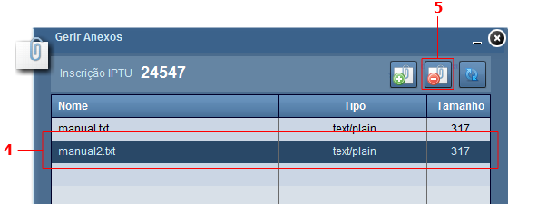
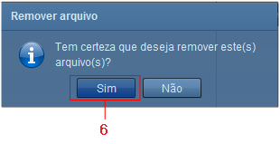

Excluir Selecionados
Exclui arquivos associados à inscrição de IPTU, selecionados na lista de anexos.
Passos para excluir selecionados:
1 - Pesquisar por inscrição de IPTU (utilizar ferramenta, Localizar por Atributo, Localizar Espacialmente ou Localizar Avançado);
2 - Clicar sobre registro na Lista de Resultados;

3 - Clicar sobre símbolo "Exibir Anexos" na Lista de Resultados, ou no símbolo "Anexos" localizado no Pop-up;
4 - Clicar sobre registro a ser removido na lista de anexos.
Nota: utilize o Ctrl + botão esquerdo do mouse, seleciona mais de um registro.

5 - Clicar sobre o símbolo "Excluir Selecionados";
6 - Clicar sobre o botão "Sim" para confirmar.

Nota: Utilize o botão para atualizar a lista de anexos".